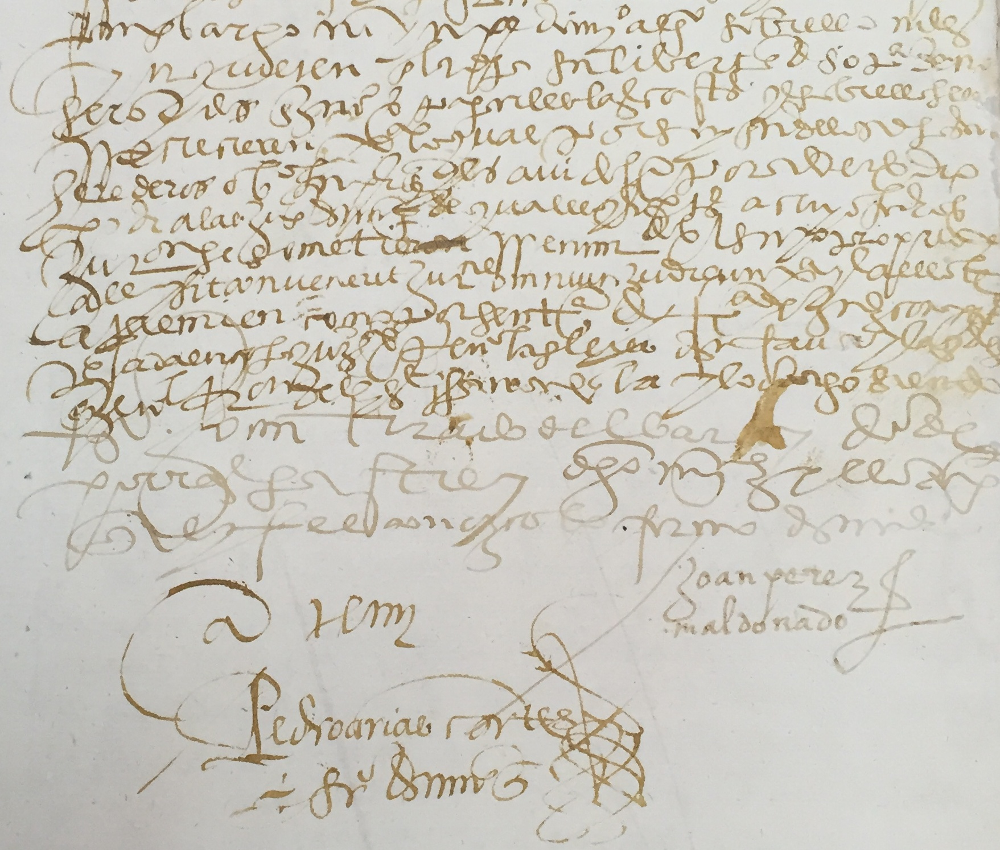

"Instrucción para descubrir todas las guacas del Pirú y sus camayos y haziendas" [ca 1581-1585] en Relación de las fábulas y ritos de los Incas, Eds., Henrique Urbano y Pierre Duviols, Historia 16, Madrid, 1989.

De las costumbres y conversión de los indios del Perú: Memorial a Felipe II [1588]. Madrid: Polifemo.


